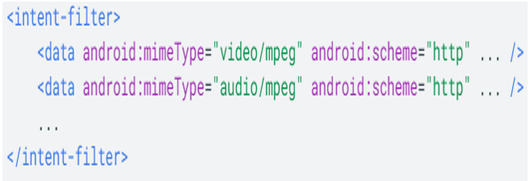

Es un objeto de acción que se utiliza para solicitar una acción de otro componente de la aplicación.
Facilitan la comunicación entre los componentes de diferentes maneras de las cuales se detallan tres casos de usos fundamentales:
• Para comenzar una actividad: Para iniciar una nueva instancia de una actividad se pasa un objeto Intent a startActivity(). El objeto de acción Intent describe la actividad que debe iniciarse con sus respectivos datos. Si se desea recibir el estado de una actividad se utiliza startActivityForResult().
• Para iniciar un servicio: Para iniciar un servicio de operación única se debe pasar un intent a startService(), de este modo el intent describe el servicio que se debe iniciar con los datos necesarios.
• Para entregar un mensaje: Para enviar mensajes a otras apps se debe pasar un Intent a sendBradcast(), sendOrderedBroadcast() o sendStickyBroadcast().
Intents Explícitas
Se indica exactamente el componente a lanzar. Su utilización típica es la de ir ejecutando los diferentes componentes internos de una aplicación. Por ejemplo, desde la actividad MainActivity lanzamos AcercaDeActivity por medio de un Intent explícito.
Ejemplo:
Intents Implícitas
Pueden solicitar tareas abstractas, como “quiero tomar una foto” o “quiero enviar un mensaje”. Además las intenciones se resuelven en tiempo de ejecución, de forma que el sistema mirará cuantos componentes han registrado la posibilidad de ejecutar ese tipo de Intent. Si encuentra varias el sistema puede preguntar al usuario el componente que prefiere utilizar.
Ejemplo:
Cuando el sistema recibe una intent implícita para iniciar una actividad, busca la mejor actividad para la intent mediante la comparación de la intent con los filtros de intents basándose en tres aspectos:
• Acción
• Datos (tanto URI como tipo de datos)
• Categoría
Prueba de Acción
Para especificar las acciones de intents aceptadas, un filtro de intents puede declarar
un número de elementos
Prueba de Categoría
Para especificar las categorías de intents aceptadas, un filtro de intents puede declarar un
número de elementos
Prueba de Datos
Para especificar los datos de intents que se aceptan, un filtro de intents puede declarar un número de elementos de cero en adelante. Cada elemento (data) puede especificar una estructura de URI y un tipo de datos (tipo de contenido multimedia de MIME).
URI
• Si no se especifica el esquema, se ignora el host.
• Si el host no se especifica, se ignora el puerto.
• Si no se especifican el esquema ni el host, se ignora la ruta de acceso.
• Si un filtro especifica únicamente un esquema, todos los URI con ese esquema coinciden con el filtro.
• Si un filtro especifica un esquema y una autoridad, pero no una ruta de acceso, todos los URI con el mismo esquema y autoridad pasan el filtro, independientemente de la ruta que tengan.
• Si un filtro especifica un esquema, una autoridad y una ruta de acceso, solo los URI con el mismo esquema, autoridad y ruta pasan el filtro.
URI y MIME
• Una intent que no contiene ni un URI ni un tipo de MIME pasa la prueba solo si el filtro no especifica ningún URI ni tipo de MIME.
• Si una intent contiene un URI, pero no un tipo de MIME, pasa la prueba solo si el URI coincide con el formato de URI del filtro.
• Si una intent contiene un tipo de MIME, pero no un URI, pasa la prueba solo si el filtro enumera el mismo tipo de MIME y no especifica un formato de URI.
• Una intent que contiene tanto un URI como un tipo de MIME, pasa la parte de tipo de MIME de la prueba solo si ese tipo coincide con el enumerado en el filtro. Pasa la parte del URI de la prueba si este coincide con un URI del filtro.
Una intent permite iniciar una actividad en otra app mediante la descripción de una acción simple que desees realizar (como "ver un mapa" o "tomar una foto") en un objeto Intent. Al llamar a startActivity() o startActivityForResult() y pasarle una intent implícita, el sistema resuelve la intent en una aplicación que puede manejarla e iniciar su Activity correspondiente.
Nota: Para verificar primero que exista una app para recibir la intent, llama a resolveActivity() en tu objeto Intent. Si el resultado no es nulo, hay al menos una aplicación que puede administrar la intent y es seguro llamar a startActivity(). Si el resultado es nulo, no debes usar la intent y, si es posible, debes inhabilitar la función que la invoca.
Ejemplo
Crear una alarma
Para crear una alarma nueva, usa la acción ACTION_SET_ALARM y especifica detalles como la hora y el mensaje con los extras definidos a continuación.